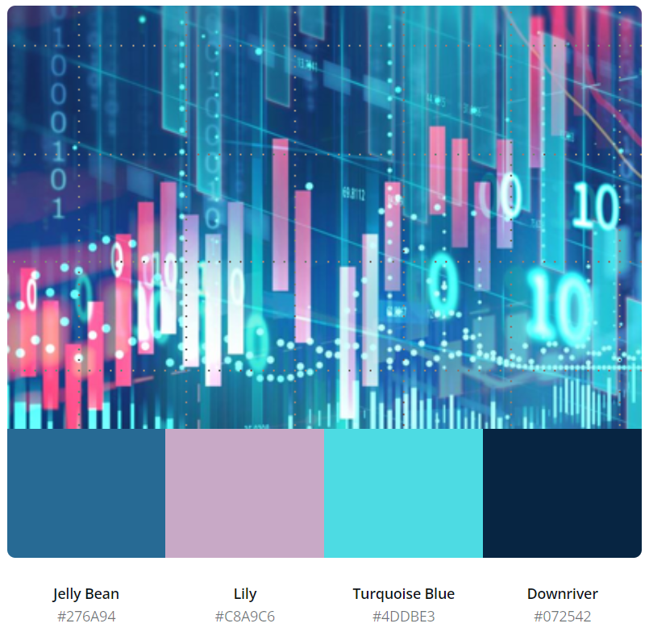

Ideengenerierung und Dasboardaufbau¶
Beschreibung der Entstehung der Idee und Aufbau des Dashboards¶
Note
Dieses Kapitel beschreibt, wie wir das Thema gefunden haben. Des Weiteren wird erläutert, wie das Dashboard aufgebaut wurde.
Themenfindung/ The Big Idea¶
Die digitale Transformation bietet den meisten Unternehmen viele neue und bedeutende Chancen. Schnell wird jedoch klar, dass diese Transformation auch Risiken herbeiführen kann. Dabei ist fast jeder, also Unternehmen, öffentliche Institutionen, andere Organisationen sowie Privatpersonen das Ziel von Cyber-Attacken. Die Bedrohungslage nimmt stetig zu. Ziel sind die sensiblen und wertvollen Daten.
Organisiert werden Schwachstellen, wie veraltete Systeme, zu geringe Sicherheitsbarrieren oder menschliches Fehlverhalten. Cyber-Attacken führen häufig zu finanziellen Schäden.
Cyber Security wird in vielen deutschen Unternehmen vernachlässigt. Oft können die Unternehmen die Risiken der Cyberkriminalität nicht abschätzen. Die Angst vor Cyberkriminalität ist meist nicht groß genug. Betrachtet man im Gegenzug dazu erfasste Fälle von Cyberkriminalität in den letzten zehn Jahren in Deutschland, so kann man 2020 fast vierfach so viele Fälle feststellen. Cyberkriminalität lässt sich geradezu als Wachstumsbranche bezeichnen. Neben den Hobby-Hackern gibt es mittlerweile professionelle Anbieter, die ihre Hacker-Services als Dienstleistung anbieten. Besonders kleine und mittelständische Unternehmen stehen im Visier von Cyberkriminiellen. Denn diese haben meist unterdurchschnittliche Sicherheitsvorkehrungen.
Wir haben das Thema “Cyber Security” gewählt, da wir die Brisanz dieses Themas erkannt haben und daher besonders Startups, sowie klein- und mittelständische Unternehmen darauf aufmerksam machen wollen, dass es längst an der Zeit ist, tatkräftig zu werden und sich mit qualifizierten und stetig anpassenden Schutzmaßnahmen gegen Cyber-Attacken zu schützen.
Um unsere Story besser aufbauen und darstellen zu können, werden wir mithilfe des fiktiven Unternehmens LaCTiS die Zuhörer (klein- und mittelständische Unternehmen, Startups) auf unser Thema aufmerksam zu machen und sie dazu bringen, Unternehmungen anzustreben. Diese Unternehmungen beziehen sich im besten Fall auf den Kauf der LaCTiS-Produkte oder dem Buchen von LaCTiS-Dienstleistungen.
Vorgehen nach der Themenfindung¶
Zunächst wurde mit der explorativen Analyse gestartet. Wir haben uns nach Daten umgeschaut und haben versucht, diese nachzuvollziehen. Dabei haben wir auf verschiedene Ressourcen zurückgegriffen, wie z. B. Statista, information is beautiful oder auch Reports von Unternehmen und dem Bundesamt für Sicherheit der Informationstechnik. Anschließen haben wir uns die relevanten und interessantesten Daten herausgesucht, um sie in unser Dashboard zu integrieren.
Im nächsten Schritt wurde mit der explanatorischen Kommunikation gestartet. Dies ist unter anderem die Umsetzung unseres Dashboards. Wir wollen damit die von uns rausgesuchten Daten aus der explorativen Analyse kommunizieren, die Zuhörenden für das Thema sensibilisieren und sie anschließend dazu anregen, aktiv zu werden.
Aufbau des Dashboards/ Storyboard¶
Um die Story verständlich für den Zuhörer aufbauen zu können, haben wir die Visualisierungen zu Themengebieten zugeordnet. Jedes Themengebiet hat einen eigenen Tab bekommen (siehe Abbildung 1). So kann sich der Zuhörer bei der Präsentation auf die Visualisierung konzentrieren, über die gerade gesprochen wird und keinen Informations-Overload bekommt. Beim Aufbau des Dashboards bzw. der einzelnen Tabs haben wir uns von Tableau (siehe https://help.tableau.com/current/pro/desktop/de-de/stories.htm) inspirieren lassen.
Im Folgenden werden die ersten Skizzen unseres Dashboards gezeigt. An diesen haben wir uns dann bei der Erstellung des Dashboards orientiert. Das hat uns sehr geholfen, um uns vorstellen zu können, wie es aussehen soll und dann nach dieser Vorlage programmieren zu können.
 Abbildung 1 Header des Dashboards
Abbildung 1 Header des Dashboards
Unser Header sollte aus dem Titel des Dashboards und dem Logo von LaCTiS bestehen. Außerdem haben wir in den Header noch die Tabs eingefügt, die bereits oben erwähnt wurden. Bei den Tabs haben wir uns folgenden Aufbau überlegt:
Dem Zuhörer soll zunächst ein grober Überblick über die Datenlecks in den letzten Jahren gegeben werden. (Siehe Abb. 2)
Angriffsvektoren bei Cyber Angriffen. Also wie werden Unternehmen angegriffen und in welchem Verhältnis stehen diese Angriffsvektoren. (Siehe Abb. 3)
Im nächsten Schritt soll auf den Angriffsvektor ‘Phishing’ genauer eingegangen werden. (Siehe Abb. 4)
Als Letztes soll der Zuhörer noch über die Sicherheit von Passwörtern etwas erfahren. (Siehe Abb. 5)
Tab 1 Datenlecks¶
 Abbildung 2 Tab 1 Datenlecks
Im ersten Tab soll mit den finanziellen Schäden, die durch Datenlecks entstanden sind, zum Thema Cyber Security hingeführt werden. Der Zuhörer soll hier erkennen, dass die finanziellen Schäden über die Jahre größer geworden sind. Die Aufmerksamkeit soll hier eventuell auch ein bisschen durch die “Angst” selbst gehackt zu werden und finanzielle Schäden zu erleiden, geweckt werden.
Abbildung 2 Tab 1 Datenlecks
Im ersten Tab soll mit den finanziellen Schäden, die durch Datenlecks entstanden sind, zum Thema Cyber Security hingeführt werden. Der Zuhörer soll hier erkennen, dass die finanziellen Schäden über die Jahre größer geworden sind. Die Aufmerksamkeit soll hier eventuell auch ein bisschen durch die “Angst” selbst gehackt zu werden und finanzielle Schäden zu erleiden, geweckt werden.
Tab 2 Cyber Attacken¶
 Abbildung 3 Tab 2 Cyber Attacken
Der zweite Tab soll dazu dienen, dem Zuhörer zu übermitteln, dass es neben den Systemen die angegriffen werden, auch die Menschen sind, die dazu führen, dass Cyber Angriffe entstehen können. Außerdem soll insgesamt ein Überblick gezeigt werden, welche unterschiedlichen Angriffsvektoren es in den Kategorien Mensch und System gibt. Zu den verschiedenen Angriffsvektoren soll eine Erklärung ausgegeben werden.
Abbildung 3 Tab 2 Cyber Attacken
Der zweite Tab soll dazu dienen, dem Zuhörer zu übermitteln, dass es neben den Systemen die angegriffen werden, auch die Menschen sind, die dazu führen, dass Cyber Angriffe entstehen können. Außerdem soll insgesamt ein Überblick gezeigt werden, welche unterschiedlichen Angriffsvektoren es in den Kategorien Mensch und System gibt. Zu den verschiedenen Angriffsvektoren soll eine Erklärung ausgegeben werden.
Tab 3 Phising¶
 Abbildung 4 Tab 3 Phishing
Phishing-Mails hat vermutlich jeder schon einmal bekommen und kann sich damit identifizieren. Phishing ist einer der Hackermehtoden die jeder kennt. Daher wollten wir zu dieser Art von Angriffsvektor noch detaillierte Informationen geben.
Abbildung 4 Tab 3 Phishing
Phishing-Mails hat vermutlich jeder schon einmal bekommen und kann sich damit identifizieren. Phishing ist einer der Hackermehtoden die jeder kennt. Daher wollten wir zu dieser Art von Angriffsvektor noch detaillierte Informationen geben.
Tab 4 Passwortsicherheit¶
 Abbildung 5 Tab 4 Passwort-Cloud und Passwortrechner
Passwörter sind ein elementarer Bestandteil, um sich vor Cyber Attacken zu schützen. Wenn man sich im Gegensatz dazu die meist genutzten Passwörter anschaut, verstehen die meisten Menschen vermutlich nicht Relevanz von diesen. Mit dem Passwörter-Calculator soll dem Zuhörer demonstriert werden, wie schnell einfache Passwörter gekackt werden können.
Abbildung 5 Tab 4 Passwort-Cloud und Passwortrechner
Passwörter sind ein elementarer Bestandteil, um sich vor Cyber Attacken zu schützen. Wenn man sich im Gegensatz dazu die meist genutzten Passwörter anschaut, verstehen die meisten Menschen vermutlich nicht Relevanz von diesen. Mit dem Passwörter-Calculator soll dem Zuhörer demonstriert werden, wie schnell einfache Passwörter gekackt werden können.
Design des Dashboards¶
Das Dashboard sollte im besten Fall zur Corporate Identity (CI) passen. Da es sich bei LaCTiS um ein von uns ausgedachtes Unternehmen handelt, haben wir uns ein Logo und eine Farbpalette ausgedacht, die unserer Meinung nach zum Thema Cyber Security passt. Die Farbpalette haben wir mithilfe eines Bildes mit der Color palette generator von Canva erstellt (siehe https://www.canva.com/colors/color-palette-generator/). Dort konnten wir dann den Hexadezimalcodes für unsere Farbpalette übernehmen.
 Abbildung 6 Tab 4 Farbpalette inklusive Hexadezimalcodes
Beim Logo wurde ein Schutzschild als Grundlage gewählt, da dieses Symbol häufig in Verbindung mit Cyber Security gebracht wird. Es soll den Schutz vor möglichen Angriffen darstellen. Im Inneren des Schutzschilds ist ein Kreis in dem alle Buchstaben des Unternehmensnahems zu finden sind.
 Abbildung 7 Logo LaCTiS
Abbildung 7 Logo LaCTiS
Arbeitsweise¶
Zur Versionsverwaltung unserer Software-Entwicklung haben wir den netzbasierten Dienst GitHub verwendet. Da wir zu Zweit an dem Projekt gearbeitet haben, konnten wir unsere Ergebnisse dann dort zusammenfügen. Dabei haben wir vor allem bei der Erstellung des Dashboards und der Reports mit zwei Branches gearbeitet. So konnten wir gleichzeitig an dem Projekt, jeder in seinem eigenen Branch, arbeiten. In regelmäßigen und für uns sinnvoll erscheinen Abständen haben wir unsere Ergebnisse durch git-merge zusammengefügt. Als Quelltext-Editor haben wir uns für den kostenlosen Editor Visual Studio Code von Microsoft entschieden, da wir diesen bereits von vorherigen Projekten kannten. Unsere Ergebnisse wurden alle in Python-Dateien geschrieben, da wir hier einfacher mit Klassen und Methoden arbeiten konnten. Zur Bearbeitung von den DataFrames und zur Entwicklung von den Diagrammen mit Plotly Express, Plotly Go etc. haben zunächst IPYNB-Dateien erstellt. Hier konnten wir die DataFrames gut bearbeiten und die Diagramme entwickeln, da man immer eine direkte Rückmeldung bzw. ein Ergebnis bekommt. Das erleichtert die Entwicklung. Für die weitere Entwicklung des Dashboards wurden die IPYNB-Dateien dann in Python-Dateien überführt. Insgesamt haben wir unsere Ideen gemeinsam erarbeitet bzw. gebrainstormt. Den Code haben wir dann meist in Einzelarbeit, aber auch in PairProgramming geschrieben. Außerdem haben wir an den Wochenenden und der vorlesungsfreien Zeit einige Hackathons durchgeführt. Insgesamt haben wir sehr gut zusammen gearbeitet und uns gegenseitig immer bei Fragen oder Problemen geholfen. Als Kollaraborationsplattform haben wir Teams verwendet. Dort haben wir Dokumente und Dateien für die explorative Phase geteilt, uns in virtuellen Räumen getroffen und in einem Kanban-Board unsere Fortschritte, sowie Aufgaben dokumentiert.
Note
SpiceTech :D das schreibt Tim :P .